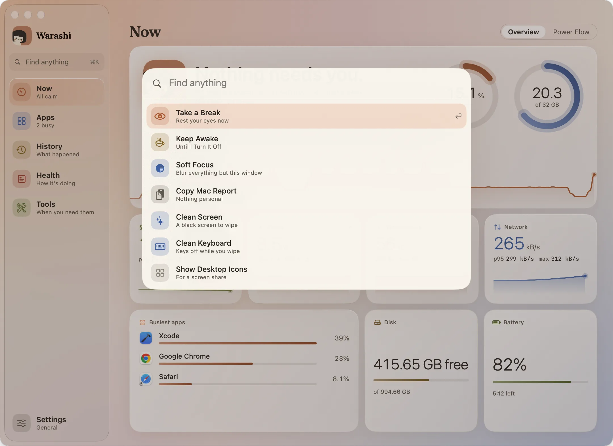
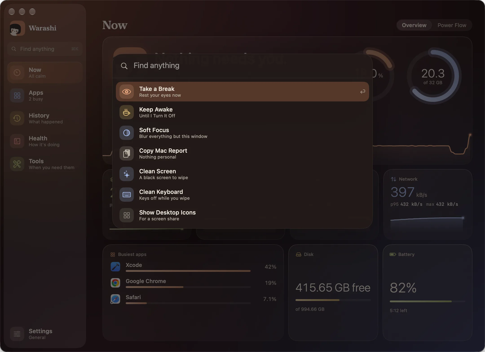

Het venster is waar Warashi alles laat zien wat het weet. Het is gegroepeerd op wat je wilt doen, dus alles is hooguit drie klikken weg: een plek, een tabblad, een actie.
De zes plekken
| Plek | De vraag die het beantwoordt | Tabbladen |
|---|---|---|
| Nu ⌘1 | Hoe is mijn Mac er nu aan toe? | Overzicht, Energiestroom |
| Apps ⌘2 | Wat gebruikt het? | Apps, Tijd × Kosten, Ontwikkelaar |
| Geschiedenis ⌘3 | Wat is er gebeurd? | Grafieken, Logboek, Waarschuwingen |
| Gezondheid ⌘4 | Is hij in goede conditie? | Controle, Batterij, Opslag, Advies |
| Gereedschap ⌘5 | Doe iets voor me | Gereedschap (en daarvandaan Snelheidstest) |
| Instellingen ⌘, | Maak het van jou | Algemeen, Aanpassen, Waarschuwingen, Pauzes en meer |
De tabbladen staan rechtsboven op elke pagina. Elke plek onthoudt het tabblad waar je het laatst was. Macs zonder batterij tonen Energiestroom of Batterij niet.
Zoek alles
- Druk op ⌘K
Of klik op Zoek alles bovenaan de navigatiekolom, of in het menubalkvenster.


- Typ een paar letters
“laad”, “pauze”, “snelheid”, “opslag”… Het vindt elke pagina en elk instellingenvenster, en acties zoals Neem een pauze, Wakker houden, Volledig opladen, Kopieer Mac-rapport en Open Prullenmand.
- Druk op Return
Gebruik ↑ en ↓ om te kiezen, Return om te gaan en Esc om te sluiten.
Nu
Nu opent het eerst. Bovenaan hoe je Mac eraan toe is in woorden: Niets heeft je nodig. of wat dat wel doet, met ringen voor processor en geheugen over de laatste 24 uur. Daaronder: GPU, vermogen, temperatuur en netwerk met hun p95 en maximum en de laatste minuut, dan de drukste apps, je schijf en je batterij. Druk op een tegel om dieper te gaan: Vermogen opent Energiestroom, Schijf opent Opslag en Batterij opent Batterij.